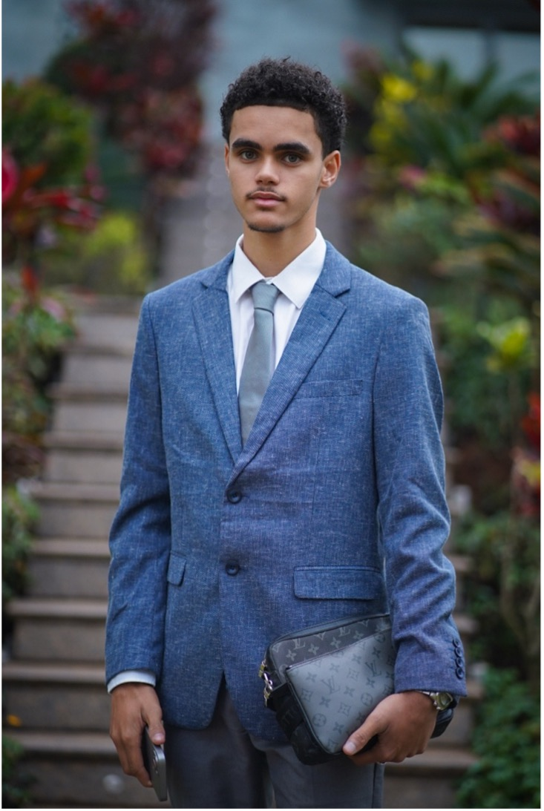

Présenté par Melvyn de Giovanni

Depuis très jeune, j'ai toujours été intéressé par tout ce qui touche au digital, je pense que je tiens cette passion de mon père, qui est ingénieur développeur. J'ai grandi en France, en région parisienne, et c'est à l'âge de 11 ans, lorsque j'ai eu mon premier ordinateur, que j'ai commencé à m'intéresser au montage vidéo. Aujourd'hui, j'ai 19 ans, et depuis 1 an, je vis à Madagascar avec mes parents et mes frères et sœurs, pour aider mes parents dans leur association humanitaire, et durant toutes ces années, j'ai pu apprendre le montage vidéo, la réalisation, le développement de sites web, mais également la production musicale et la composition. Aujourd'hui, j'aimerais associer mon parcours et mes valeurs avec mon projet professionnel.
Dès le collège, j'ai rapidement apprécié la matière technologie. Après avoir eu le brevet, je suis entré au lycée pour faire un bac général. Et en première, je me suis orienté vers les spécialités Maths, NSI (Numérique et Sciences Informatiques) et LLCE.
À côté de mes études, je continuais la création de contenu et je cherchais toujours à faire mieux, à apprendre de nouvelles choses. J'ai pu réaliser quelques projets, par exemple la captation vidéo d'un concert d'une association dans ma ville, ou bien des sites vitrine pour quelques particuliers. J'ai aussi réalisé des projets musicaux, allant de la composition jusqu'à la réalisation du clip, en finissant par la promotion sur les réseaux, ce qui m'a permis d'apprendre à gérer un projet complet de A à Z.
Au-delà de tout ça, j'ai toujours aimé apprendre de nouvelles choses et transmettre à mon entourage.
Au mois de décembre, j'ai eu la chance de participer à une mission humanitaire dans les villages les plus reculés de Madagascar, accessibles uniquement en hélicoptère, où les conditions de vie sont médiocres. Malgré la grande différence entre la vie en France et celle dans ces villages, j'ai beaucoup appris de cette mission. Le mélange d'émotion, de surprise et d'admiration m'a montré réellement que le numérique permet de partager au monde entier ce que le monde ignore.
Avant de partir, je me suis dit que des occasions comme celle-ci, il n'y en aurait pas des dizaines, et j'ai décidé de me lancer dans un format que je n'avais jamais expérimenté auparavant. J'ai donc pris mon matériel et réalisé un reportage sur la "brousse" de Madagascar.
Mes expériences m'ont permis de comprendre qu'on peut vivre de ses passions, et qu'avec un peu de persévérance, de curiosité et de créativité, on peut se démarquer. Elles m'ont aussi permis de constater mon évolution et m'encouragent à toujours vouloir faire mieux qu'avant.